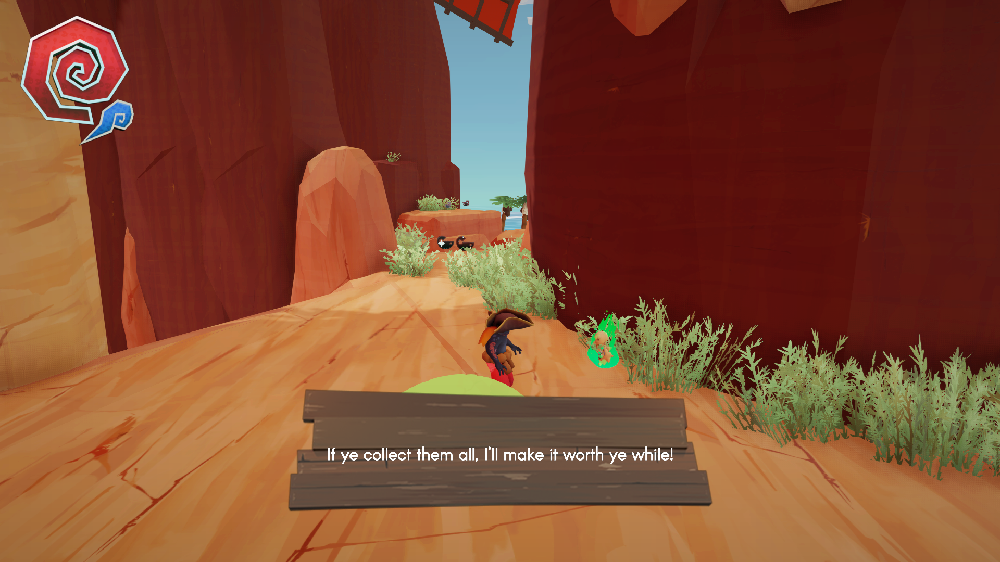
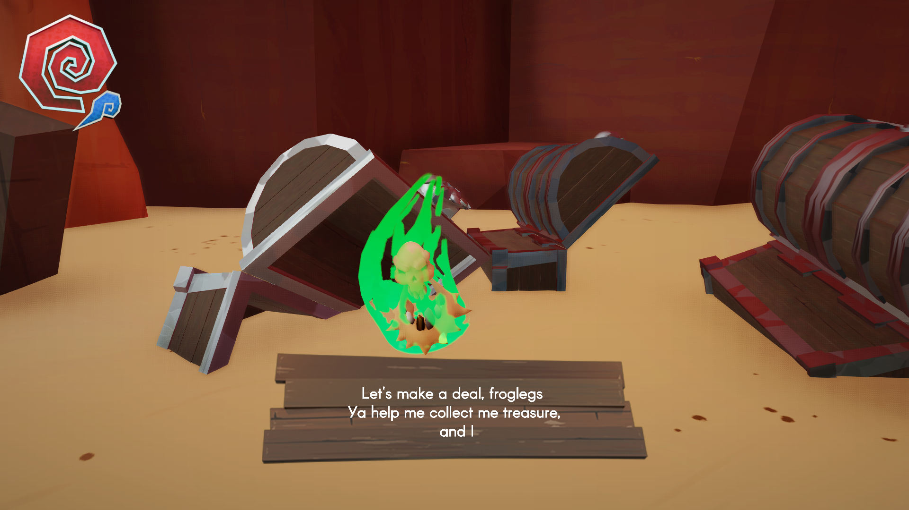
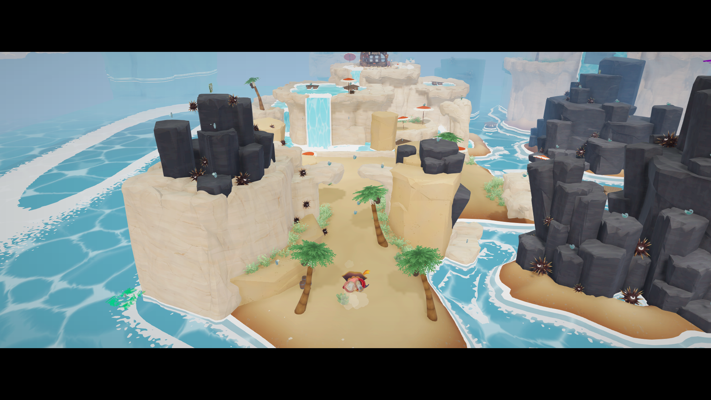
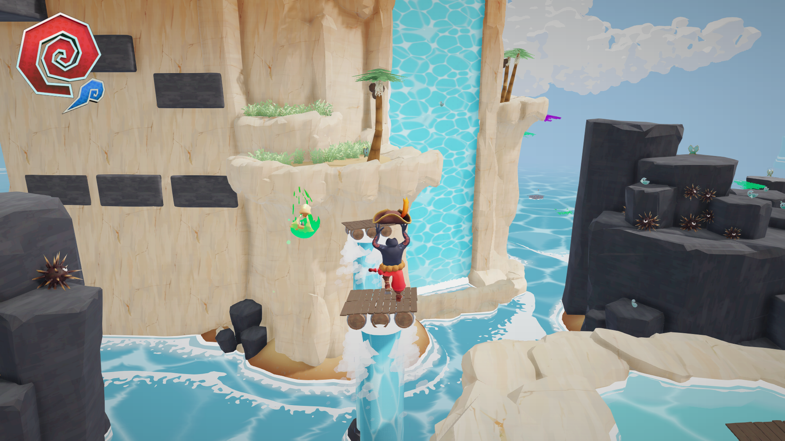
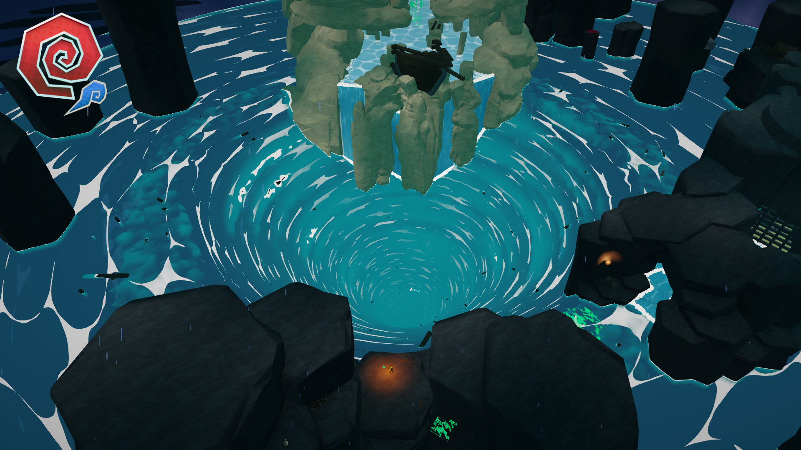

Team Project • The Game Assembly
Maruk - Shipwrecked
A third-person platformer developed in a team environment at The Game Assembly. My work focused on companion AI, behavior tree logic, and animation integration for the companion character.





Gameplay / AI Programmer
Team Project
Companion AI, Behavior Trees, Animation
TGA Engine / C++
What I Worked On
My main contribution was the companion character. I worked on behavior tree-based logic, animation integration, and gameplay-related behavior for how the companion follows, reacts, and supports the player.
Companion AI
I implemented companion behavior so the character could follow the player and react to the game world in a believable way. The goal was to make the companion feel helpful and alive rather than just attached to the player.

Behavior Trees
The companion logic was structured using behavior trees. This made it easier to define and organize decision-making, transitions, and prioritization between different actions.

Animation Integration
I integrated animations for the companion so that movement and reactions matched the underlying behavior. This was important both for clarity and for making the companion feel more connected to the world.

Challenges & Lessons
This project gave me practical experience building AI behavior inside a team project and connecting decision-making to animation and gameplay. It highlighted how important structure and readability are when building companion behaviors that stay understandable both technically and in-game.